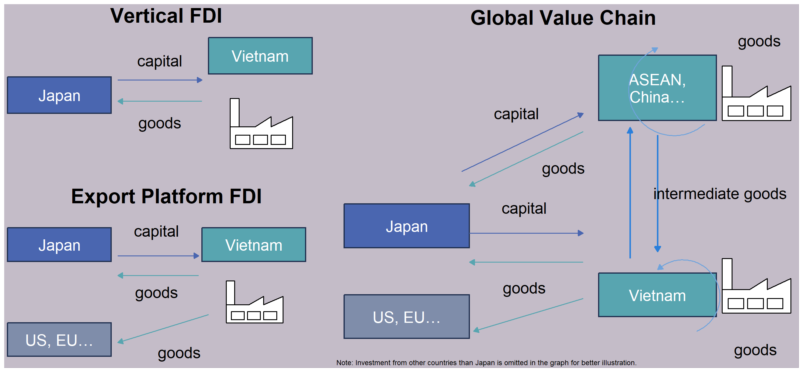
Enablers of Global Value Chains
GVC reminders
What make GVCs
What are the conditions that allow firms to separate production and consumption and different tasks in supply chain ?
Declining trade costs: trade policy, tariff and non-tariff barrier, transport and logistics
Declining coordination costs: investment policy, ICT, movement of people, institution
Effects of Trade Costs on Bilateral Trade
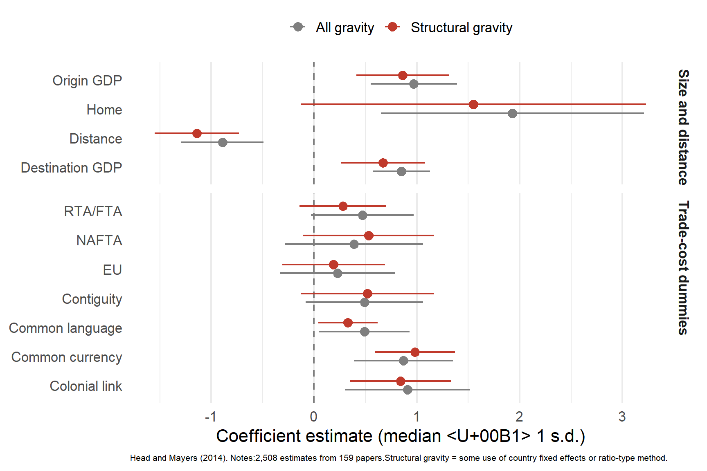
WTO and multilateralism
- 1948–49: GATT launched with 23 members; +11 accessions
- 1950s: +15 accessions, 2 successions, 4 withdrawals
- 1960s: +12 accessions, 21 successions
- 1970s: +9 accessions, 4 successions
- 1980s: +6 accessions, 5 successions
- 1990–94: +9 accessions, 20 successions
- 1995: WTO established
- 1996–2000: 11 accessions (Bulgaria, Ecuador, Mongolia, Kyrgyz Rep., etc.)
- 2001–05: 7 major accessions (China, Lithuania, Moldova, Chinese Taipei, Saudi)
- 2006–12: 10 accessions (Viet Nam, Ukraine, Russia, Samoa, Vanuatu)
MFN tariff rates
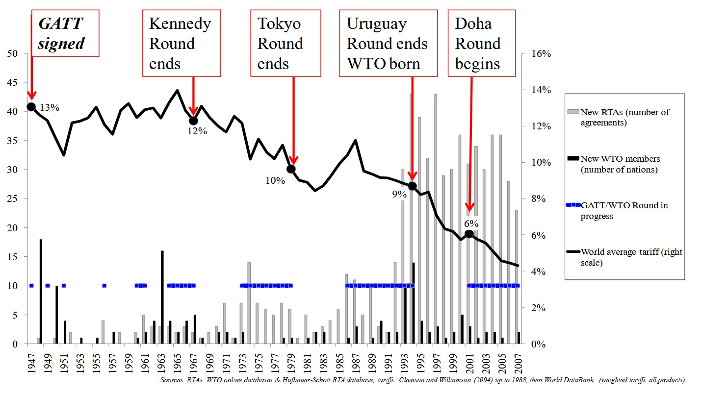
WTO challenge
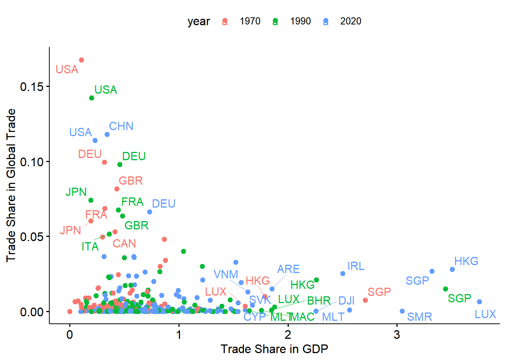
Regional and bilateral agreements
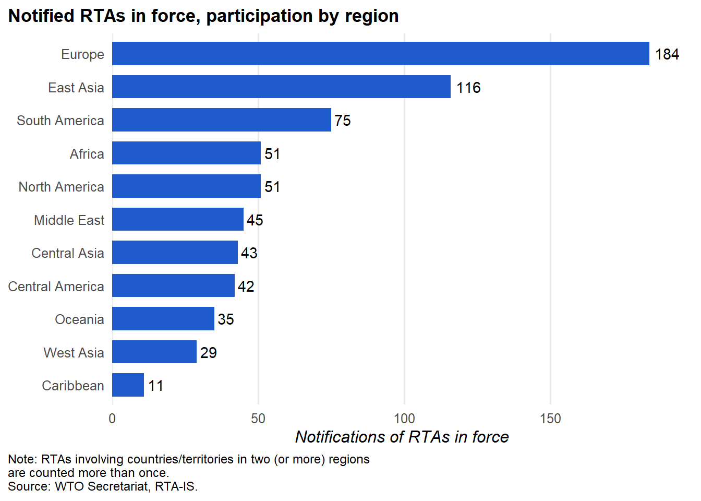
Regional and bilateral agreements by regions
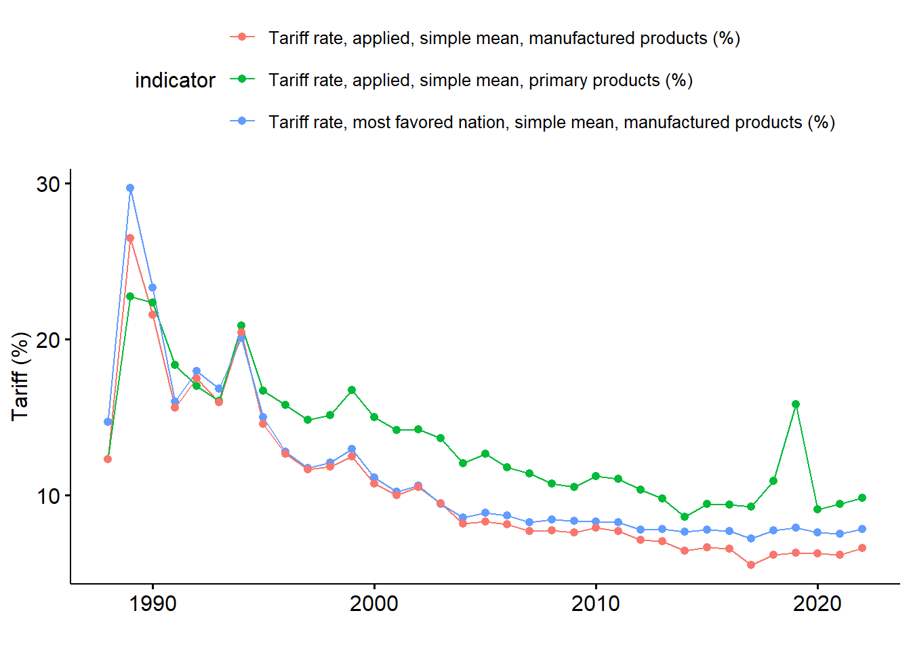
Average tariff rates
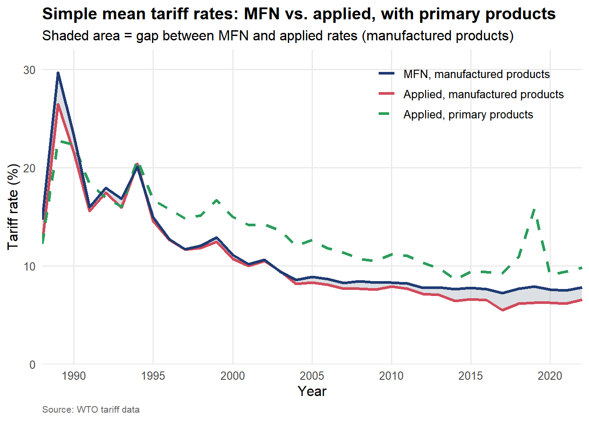
Japan tariff
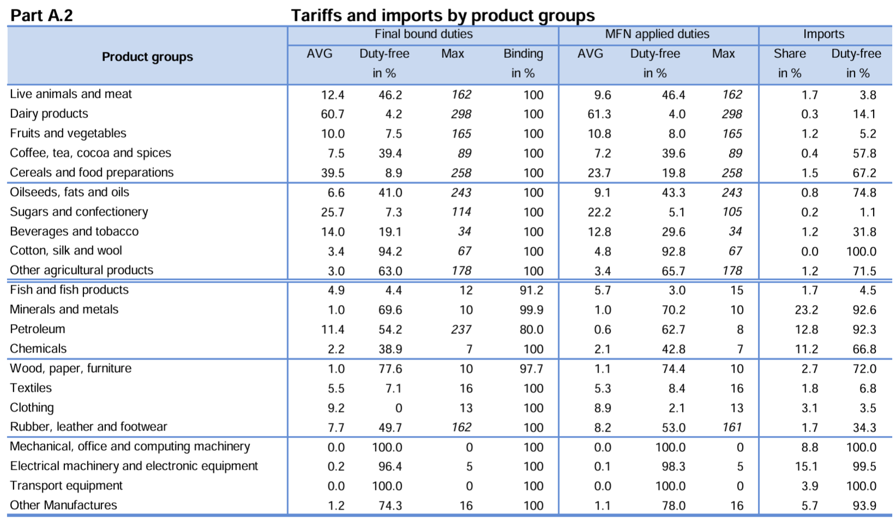
Tariff line: the most detailed product category in a country’s tariff schedule, identified by a national code (usually 8 to 10 digits, built on the 6-digit HS code). Each tariff line has its own duty rate. “AVG”, “Duty-free in %”, “Max” and “Binding in %” are all calculated over tariff lines, not over trade value.
- Final bound duties: the maximum tariff rates Japan has committed to the WTO for each product line. Japan cannot legally raise tariffs above these ceilings.
- MFN applied duties: the rates Japan actually charges other WTO members under the Most-Favoured-Nation principle, i.e. the non-discriminatory “normal” tariff, excluding preferential rates under FTAs. Applied rates are at or below bound rates.
- AVG: simple average of the ad valorem tariff rates (%) across all lines in the group.
- Duty-free in %: share of tariff lines with a zero rate.
- Max: the highest single tariff rate in the group (italics mark non-ad valorem rates converted to ad valorem equivalents).
- Binding in %: share of tariff lines that are bound at the WTO (100 means every line is bound).
- Imports (Share in %): the group’s share of Japan’s total imports.
- Imports (Duty-free in %): share of the group’s import value that enters duty-free.
Non-tariff measures
| Technical measures | Non-technical measures | Export measures |
|---|---|---|
| A. SPS (pesticide limits) | D. Trade-protective (anti-dumping) | P. Export measures (export taxes) |
| B. TBT (labeling) | E. Licensing, quotas (import bans) | |
| C. Pre-shipment inspection (customs checks) | F. Price controls (surcharges) | |
| G. Finance (FX controls) | ||
| H. Competition (state monopolies) | ||
| I. Investment, TRIMs (local content) | ||
| J. Distribution (licensed retailers) | ||
| K. Post-sales service (local service) | ||
| L. Subsidies (farm subsidies) | ||
| M. Procurement (buy national) | ||
| N. Intellectual property (patents) | ||
| O. Rules of origin (origin certificates) |
Source: UNCTAD MAST classification
Non-tariff measures by sector
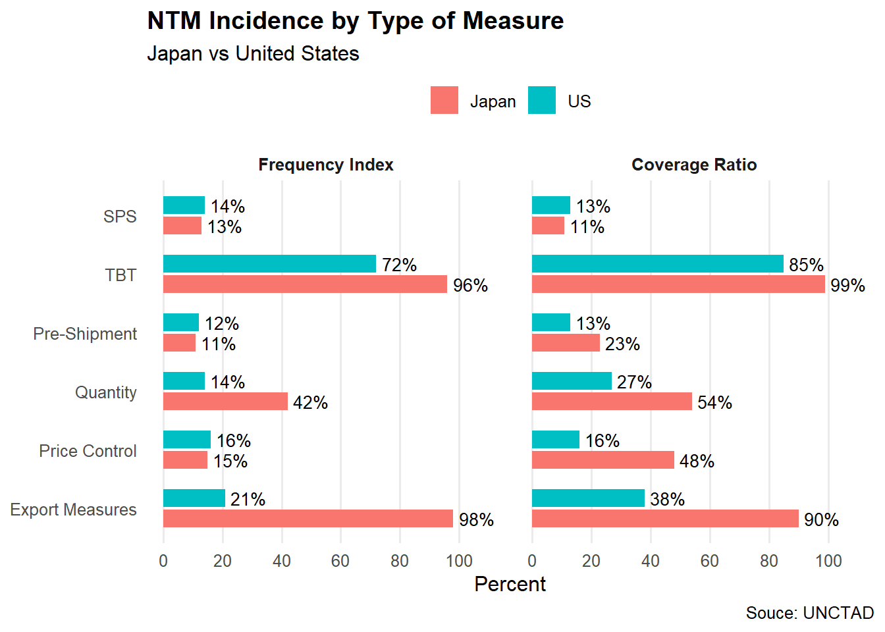
Non-tariff measures by type
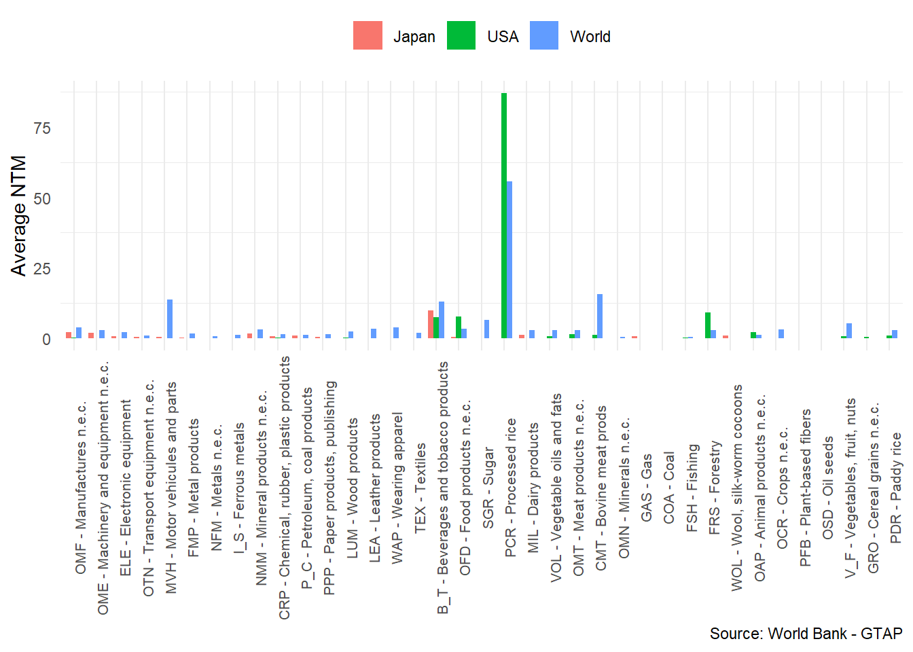
Tariff equivalence of Non-tariff measures
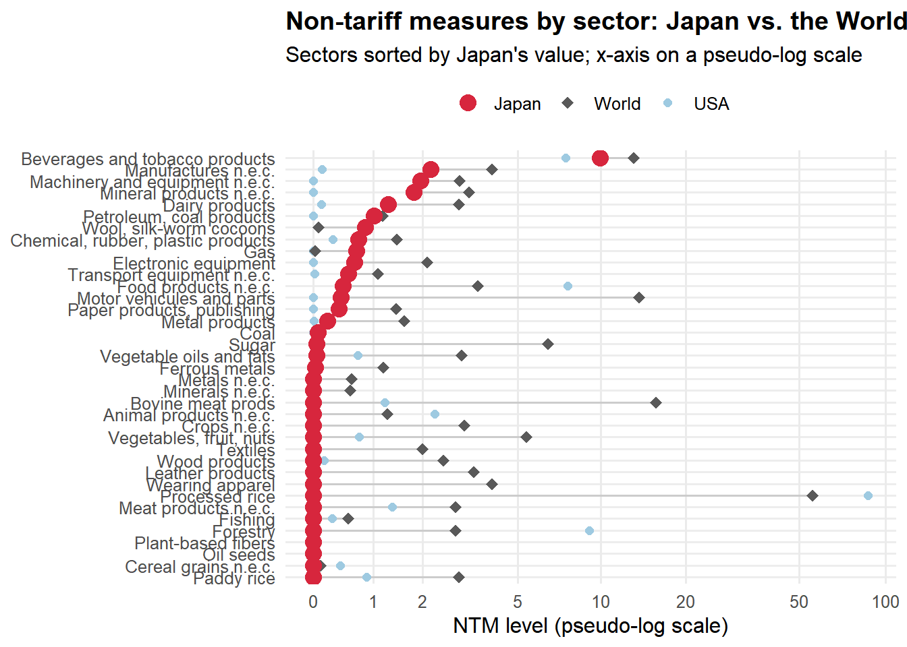
International transportation costs: Ocean
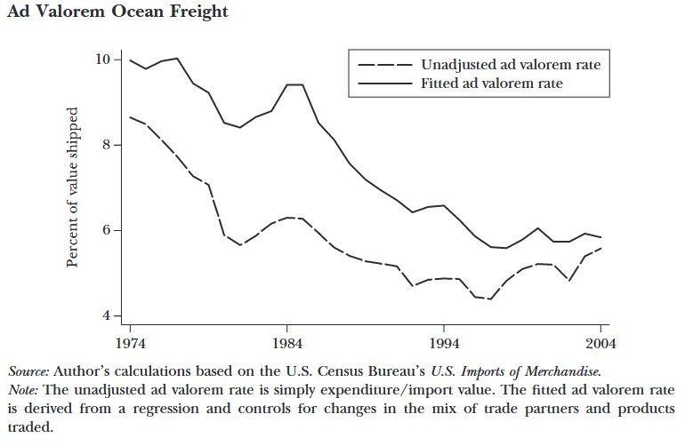
- Transport Infrastructure: ports, airports, rail/road connectivity.
- Digital Infrastructure: broadband, cloud computing, digital platforms enabling services trade.
- Case example:
- Container development
- Singapore and logistics connectivity
- Japan’s port investments in ASEAN
International transportation costs: Air
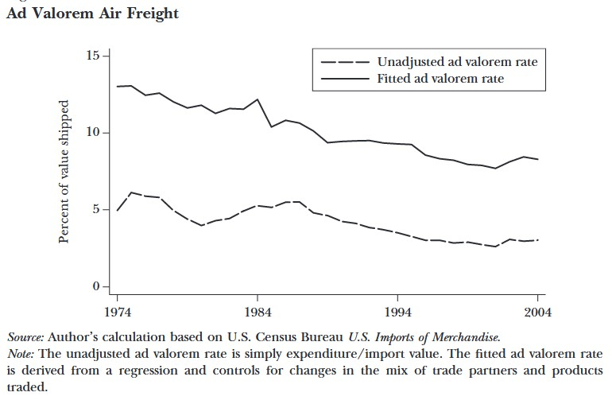
Investment treaties
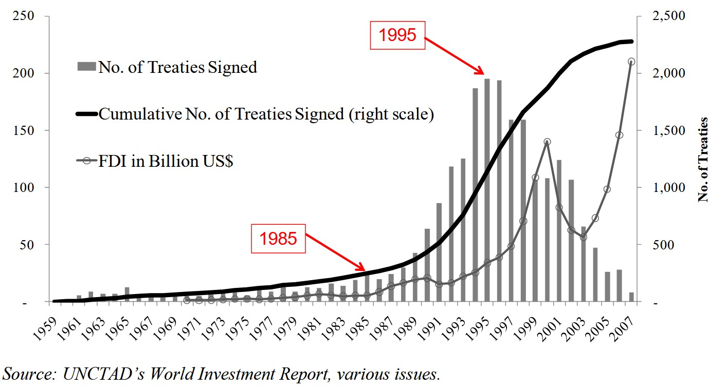
- Investment policy
- FDI openness,
- Investor protections
- Rule of law
Export processing zones: entry point into GVCs
- Labor: relatively low wages
- Infrastructure: reliable power, efficient logistics (often next to a port or airport)
- Tax and customs incentives: duty-free inputs, one-stop customs, corporate tax holidays
- Examples: Shenzhen, Bangladesh (Dhaka, Chittagong), Mexico (maquiladoras), Vietnam (Hai Phong, Binh Duong)
Custom procedures
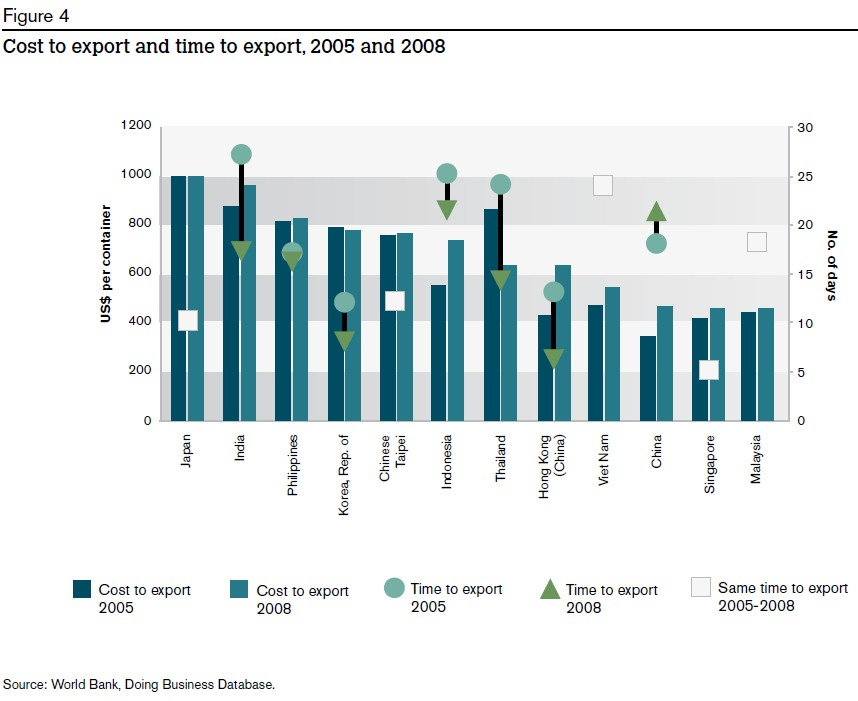
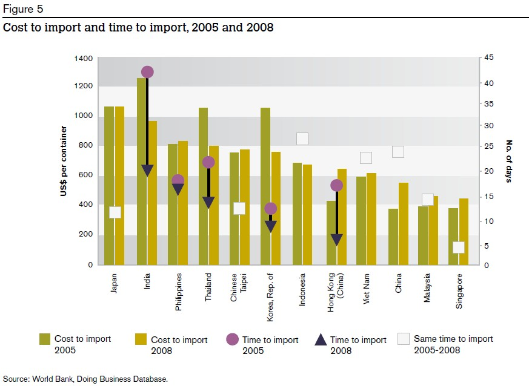
Internet access
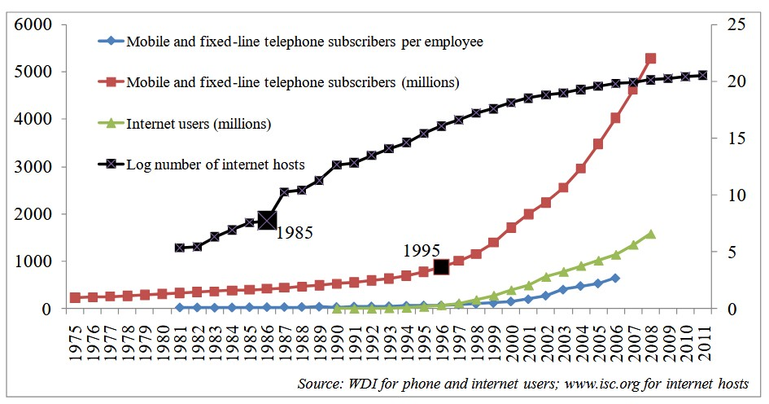
Key takeaways
Declining trade costs: trade policy, tariff and non-tariff barrier, transport and logistics
Declining coordination costs: investment policy, ICT, movement of people, institution
References
- Baldwin, R. (2011). 21st Century Regionalism: Filling the gap between 21st century trade and 20th century trade rules.
- Head, K., & Mayer, T. (2014). Gravity Equations: Workhorse,Toolkit, and Cookbook. In Handbook of International Economics (Vol. 4, pp. 131–195).
- Hummels, D. (2007). Transportation Costs and International Trade in the Second Era of Globalization. Journal of Economic Perspectives, 21(3), 131–154.
- Kimura and Chen (2016), Implications of Mega Free Trade Agreements for Asian Regional Integration and RCEP Negotiation.
- WTO and JETRO-IDE (2011), Trade patterns and global value chains in East Asia: from trade in goods to trade in tasks.
- Data links
- https://ttd.wto.org/en
- https://www.macmap.org/
- https://www.wto.org/english/res_e/statis_e/tariff_profiles_list_e.htm
- https://rtais.wto.org/
- https://unctad.org/topic/trade-analysis/non-tariff-measures/NTMs-data
- https://wits.worldbank.org/tariff/non-tariff-measures
- https://datacatalog.worldbank.org/search/dataset/0040437/ad-valorem-equivalent-of-non-tariff-measures